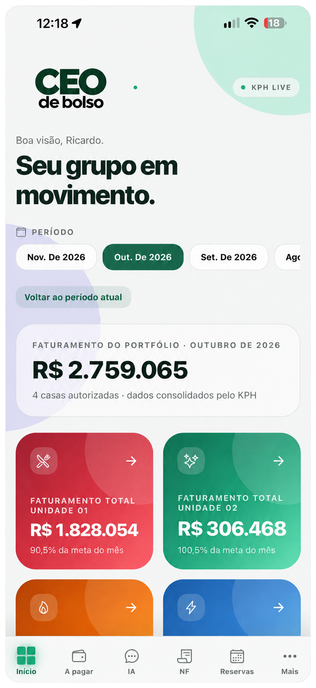
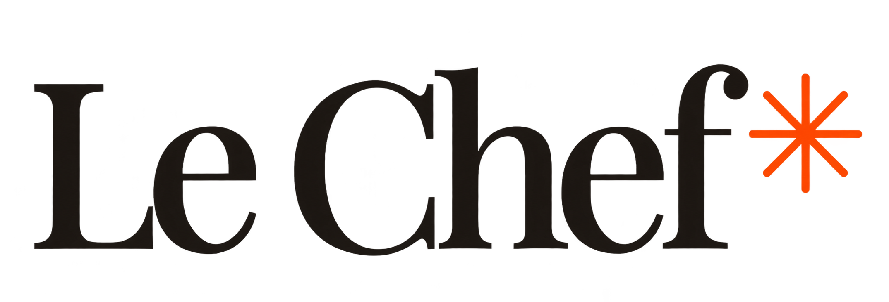
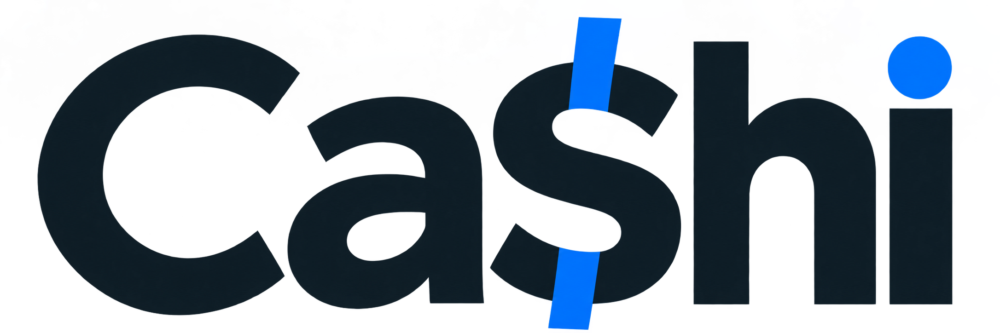
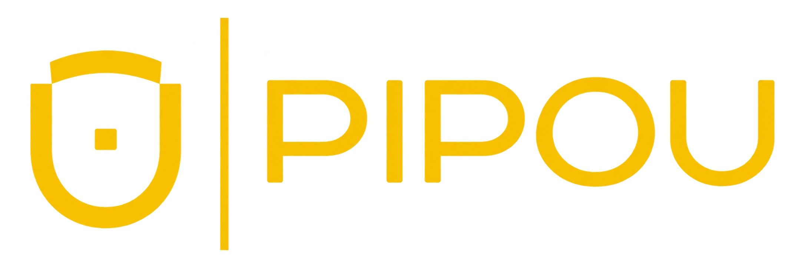
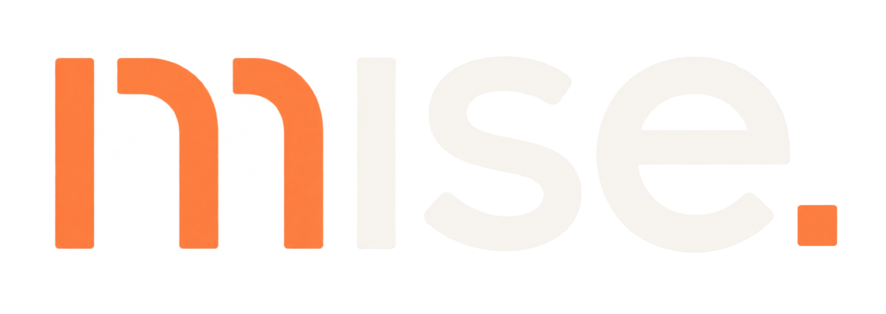
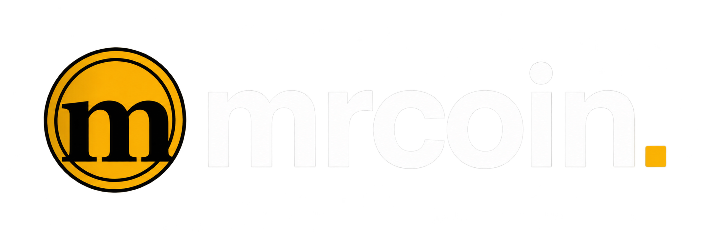
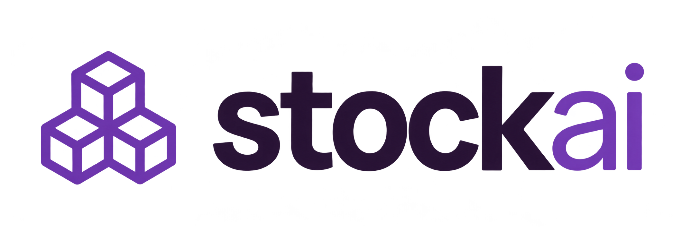

Conectamos seus
sistemas e planilhas.
Integramos informações do financeiro, vendas, compras, estoque e demais áreas em um único ambiente, aproveitando os sistemas que sua empresa já utiliza.
SEUS NÚMEROS. SUAS RESPOSTAS.
Conecte seus bancos, organize suas transações com IA e concilie os recebimentos bancários e de cartões de crédito. Entenda quanto entra, quanto sai e quanto sobra — e cruze esses números com vendas e estoque para descobrir onde o dinheiro pode estar escapando.
Reúna os dados financeiros da sua empresa em um só lugar.
Organize as transações com IA e confira os recebimentos de bancos e cartões de crédito.
Acompanhe o DRE em D+1 e os desvios que precisam da sua atenção.
01 / INTELIGÊNCIA QUE SE TRANSFORMA EM RESULTADO
A Orkestri é o sistema operacional inteligente da sua empresa.
Uma plataforma que conecta pessoas, processos, dados e sistemas, utilizando inteligência artificial para integrar a gestão, identificar oportunidades, orientar decisões e automatizar operações.
Tudo isso com um único objetivo: transformar eficiência operacional em resultados financeiros reais.
02 / SUA EMPRESA PRECISA DA ORKESTRI?
Você se identifica com alguma dessas situações?
01Seus sistemas não conversam entre si?
02Sua empresa tem vários sistemas, mas nenhuma inteligência central?
03Seus sistemas registram tudo, mas resolvem pouco?
04Sua empresa tem vários sistemas e ainda depende de planilhas?
05Seus sistemas mostram números, mas não entregam resultados?
Então você precisa da Orkestri.03 / COMO FUNCIONA
Integramos informações do financeiro, vendas, compras, estoque e demais áreas em um único ambiente, aproveitando os sistemas que sua empresa já utiliza.
Agentes inteligentes cruzam informações, identificam inconsistências, investigam desperdícios e apontam oportunidades de melhoria.
Acompanhe indicadores, receba recomendações e automatize processos autorizados. Menos trabalho manual, decisões melhores e uma operação mais eficiente.
Você já investiu nos sistemas. Agora faça todos eles trabalharem pelo resultado da sua empresa.
04 / O QUE A ORKESTRI ENTREGA
Do dinheiro que entra ao custo de cada produto. Das compras ao desempenho da equipe. Tudo conectado para melhorar seus resultados.
Conciliação bancária e de cartões, análise de receitas e despesas, fluxo de caixa e DRE gerencial para acompanhar a saúde financeira do negócio.
Análise de notas fiscais, fornecedores, insumos e variações de preços para identificar desperdícios, inconsistências e oportunidades de economia.
Acompanhe o desempenho das vendas, produtos e canais. Cruze receitas com custos e despesas para compreender a rentabilidade da operação.
Acompanhe indicadores de pessoal, custos e informações dos colaboradores, incluindo o controle de gorjetas por meio do Gorjetômetro.
Seus sistemas enxergam partes da empresa. A Orkestri conecta essas partes para enxergar o resultado.
05 / ORKESTRI NA PALMA DA MÃO
Você precisa estar na empresa para saber se ela está dando resultado?
Com o aplicativo nativo da Orkestri, donos, diretores e gestores acompanham indicadores financeiros e operacionais de onde estiverem.
Receitas, despesas, margens, resultados e informações das unidades reunidos em uma visão executiva, com dados atualizados conforme as integrações disponíveis.
Menos relatórios para procurar.
06 / RESULTADOS NA PRÁTICA
Por que pagar alguém para fazer o que a Orkestri pode automatizar?
Automatize processos. Reduza a necessidade de funcionários. Aumente sua rentabilidade.
Conciliações, conferências, cruzamento de informações, alimentação de planilhas e elaboração de relatórios consomem horas da sua equipe. A Orkestri automatiza atividades administrativas repetitivas e permite redimensionar processos e equipes, reduzir a necessidade de novas contratações e identificar oportunidades reais de economia.
Atividades que antes exigiam horas de conferência e consolidação manual podem ser automatizadas, liberando capacidade da equipe e reduzindo a necessidade de mão de obra dedicada a essas tarefas.
Ao cruzar informações de vendas, compras e financeiro, a Orkestri ajuda a identificar variações de custos, desvios e oportunidades de recuperação de margem.
Menos trabalho manual. Mais controle. Mais resultado.
07 / VEJA A ORKESTRI FUNCIONANDO
Conheça a Orkestri em uma demonstração prática: sistemas conectados, informações integradas, análises inteligentes, rotinas automatizadas e o controle da operação pelo celular.
Agende uma demonstraçãoAssista à demonstração
da Orkestri.
08 / INTEGRAÇÃO E IMPLANTAÇÃO
A Orkestri trabalha com a estrutura que sua empresa já possui.
Conectamos seus sistemas financeiros, comerciais e operacionais, validamos os dados disponíveis e aplicamos inteligência artificial sobre as informações integradas.
Integramos seus sistemas financeiros, comerciais e operacionais.
Conferimos os dados disponíveis e as informações integradas.
Aplicamos inteligência artificial para apoiar a gestão da sua empresa.
Sem precisar substituir toda a sua operação.
Seus sistemas continuam trabalhando. A Orkestri faz com que trabalhem juntos.
09 / CONHEÇA NOSSO ECOSSISTEMA
A Orkestri potencializa os sistemas que você já utiliza. Mas, quando sua empresa precisa de novas ferramentas, nosso grupo oferece soluções especializadas que complementam sua operação.

Sistema de criação de fichas técnicas para organizar ingredientes, padronizar preparos e acompanhar os custos de cada receita.
Conhecer Le ChefChatbot humanizado. O melhor do mercado. Atenda seus clientes com naturalidade e realize reservas pela conversa.
Conhecer Serena
Sistema de frente de caixa e retaguarda para conectar o atendimento à gestão e organizar a rotina da operação.
Conhecer Cashi
Gestão de pessoas, departamento pessoal, folha de pagamento e benefícios, com ponto eletrônico e mobile para acompanhar a jornada da equipe.
Conhecer Pipou
Impressão de etiquetas, checklists e gestão de eventos para organizar as tarefas da equipe e trazer mais controle para a operação.
Conhecer Mise
Reconhecimento e valorização dos colaboradores por meio de moedas virtuais, benefícios e recompensas.
Conhecer Mr. Coin
Gestão inteligente de estoque e compras, com foco em abastecimento, controle de insumos e redução de desperdícios.
Conhecer StockaiUm sistema ERP completo para integrar a gestão da empresa e reunir o controle dos processos em uma única plataforma.
Conhecer IonFerramentas para organizar comunicação, atividades e fluxos de trabalho das equipes.
Conhecer TalkiTecnologias independentes. Um ecossistema de soluções para sua empresa.
10 / CHEGOU A HORA DE TRANSFORMAR TECNOLOGIA EM RESULTADO
Conecte seus sistemas, automatize processos, reduza custos e assuma o controle da rentabilidade do seu negócio.
Agende uma demonstração da OrkestriConheça a plataforma funcionando na prática e descubra como ela pode contribuir para os resultados da sua empresa.
Orkestri.
Inteligência que se
transforma em resultado.